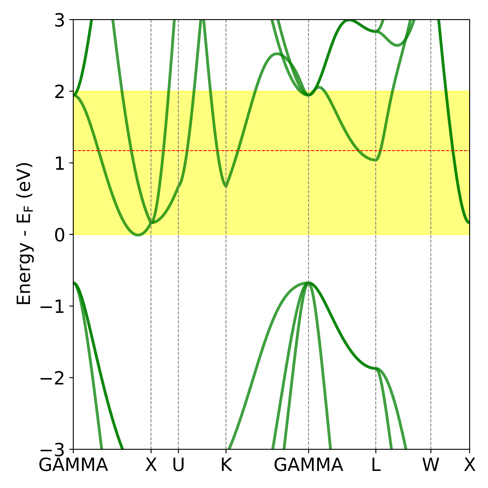

Intrinsic Dielectric Breakdown
This tutorial uses cal_mode: breakdown in QTrans to calculate
the intrinsic dielectric breakdown field of bulk silicon (Si).
The relevant theories are briefly introduced in the
Theory/Intrinsic Dielectric Breakdown section.
Warning
The following tutorials are designed for instructional purposes. To save computation time, the parameter settings are simplified and the results are not fully converged.
Bulk Si
The bulk Si tutorial is located in
tutorials/Si/openmx/breakdown/.
All necessary data files are available in tutorials/Si/openmx/data.
Reference outputs are provided in tutorials/Si/openmx/breakdown/ref/,
which can be used to compare with your own results to verify that QTrans is running correctly.
The directory contains input-sparse.yaml and reference outputs in
ref/. The input enables read_sparse_grad_mat
to read the sparse EPC gradients.
cd tutorials/Si/openmx/breakdown/
Activate the Conda environment in which QTrans is installed:
conda activate QTrans


Figure 1: The calculated band structures of silicon. The red dashed line denotes the energy level of \(\mathrm{CBM} + E_g\) . The yellow region indicates the energy window considered in the calculation.
Use the sparse input to calculate the intrinsic breakdown field of Si. We use \(16 \times 16 \times 16\) k-point and q-point meshes.
We consider the first to fourth conduction bands by setting
bands_indices to '5-8'.
Set fbd_erange to [0.0, 2.0, 0.01]
to include electron states within the energy range
\(\left[\text{CBM}, \text{CBM} + 2.0\;\text{eV}\right]\),
where CBM denotes the conduction band minimum.
This energy window is highlighted in yellow in Figure 1.
The parameter fbd_effective_mass is set to 0.96,
in units of the free-electron mass,
and fbd_exp_bandgap is set to 1.17.
The temperature is set to room temperature via temperature with a value of 300.
Both smeark and smearq are set to 50 meV, with Gaussian broadening
(gauss_type: 0) and e_thr: 150.0 meV. The phonon data use a
4 x 4 x 4 supercell, and epc.phonon_frequency_cutoff: 2.0 excludes
phonon modes below 2 meV. The final field is obtained by taking the maximum
over electron energies up to fbd_exp_bandgap relative to the CBM;
fbd_erange defines the wider energy grid used for the rate output.
The complete input-sparse.yaml is:
basic:
cal_mode: 'breakdown'
graph_data_path_uc: ../data/graph_data.npz
nao_max: 14
Ham_type: openmx
outdir: './'
advanced:
read_sparse_grad_mat: True
phonon:
supercell_matrix: [[4, 0, 0], [0, 4, 0], [0, 0, 4]]
unitcell_filename: ../data/Si-pri.vasp
force_infos_filename: ../data/FORCE_SETS
epc:
grad_mat_path: ../data/grad_mat_sparse.npy
mat_info_sc_path: ../data/mat_info_sc.npy
cell_range_cut: [2,2,2]
phonon_frequency_cutoff: 2.0
transport:
k_size: [16,16,16]
q_size: [16,16,16]
bands_indices: '5-8'
temperature: 300.0
smeark: 50.0
smearq: 50.0
gauss_type: 0
e_thr: 150.0
breakdown:
fbd_erange: [0.0, 2.0, 0.01]
fbd_effective_mass: 0.96
fbd_exp_bandgap: 1.17
You can launch the QTrans calculation with:
mpirun -np 8 QTrans_run --config ./input-sparse.yaml > sparse_kq16_breakdown.out
The current ref/sparse_kq16_breakdown.out contains the following summary:
Smear of Summation (meV) Max DOS (1/eV) Breakdown Field (MV/m)
50.00 0.8222 100.1808
100.00 0.7294 89.2444
150.00 0.6573 81.9472
200.00 0.6727 85.1180
250.00 0.7184 91.1207
300.00 0.7482 95.3838
350.00 0.7700 98.8835
400.00 0.7875 102.0965
450.00 0.8017 105.0633
500.00 0.8128 107.6512
For the input energy-averaging width of 50 meV, the breakdown field is
100.1808 MV/m. The remaining rows vary the energy-averaging width from
100 to 500 meV while retaining the same state-resolved rates, computed with
smearq: 50.0. They help assess sensitivity to energy averaging and do
not replace convergence tests of the k/q meshes and scattering broadening.
The reference run ends with QTRANS JOB SUCCESS and reports no skipped
energy points at the smallest averaging width.
The program will generate a file named fbd_rate_nk.dat,
which contains state-resolved scattering rates and energy loss rates.
The file fbd_rate_ene.dat contains energy-resolved quantities. For
readability, the excerpt below shows only the energy column and the first
DOS/scattering-rate/energy-loss-rate group (50 meV smearing):
energy(eV) DOS(1/eV) scatt-rate(1/ps) eloss-rate(eV/ps)
0.0000 5.54693678e-02 3.13931463e+00 8.89718357e-02
0.0100 5.94034869e-02 3.26463224e+00 9.67313269e-02
0.0200 5.96615466e-02 3.39928570e+00 1.04728565e-01
The full file has three header rows, followed by numerical data. The first two rows contain the column titles and their corresponding units. The third row lists the smearing parameters used for each column when integrating over electron states. These smearing parameters range from one to ten times the value of smeark, which helps verify the convergence of the integration. Each row of the log summary gives the maximum DOS and breakdown field for one of these energy-averaging widths. Use the first row for the width specified by smeark.